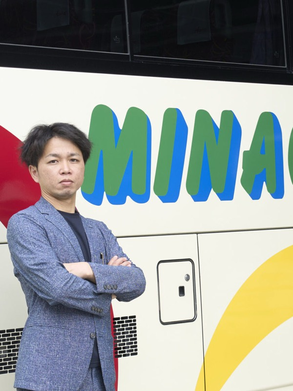
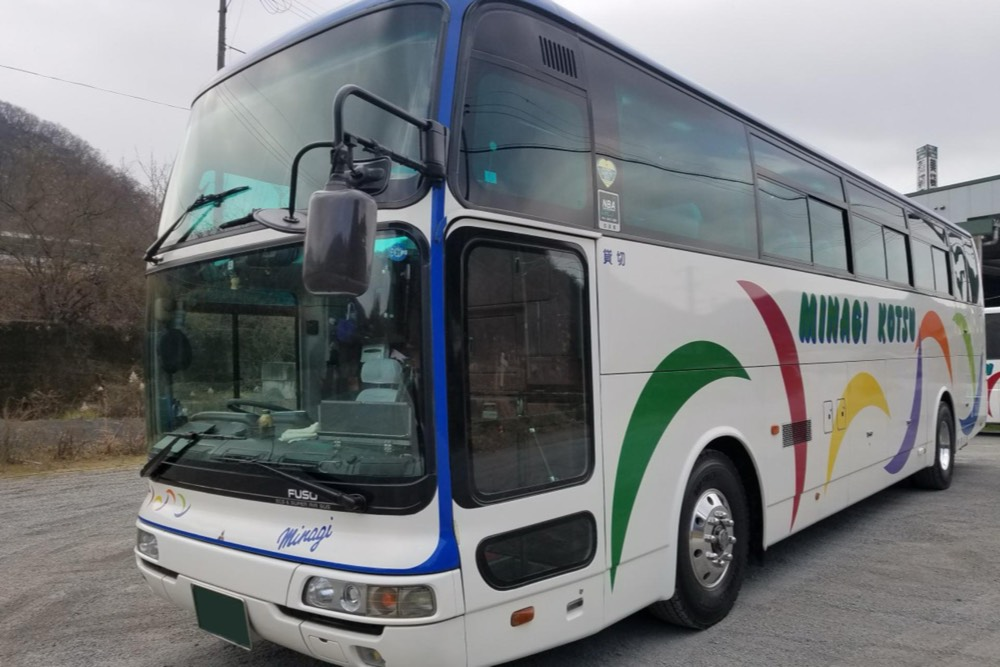
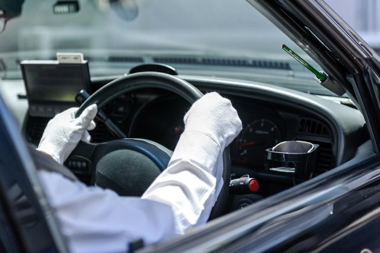
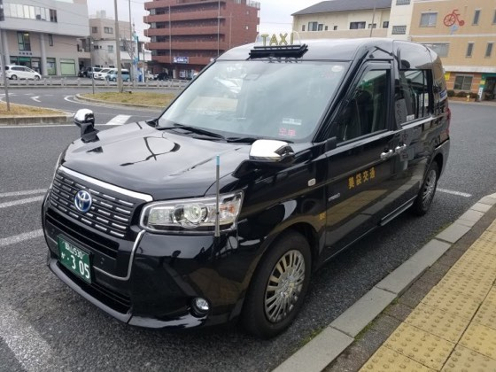
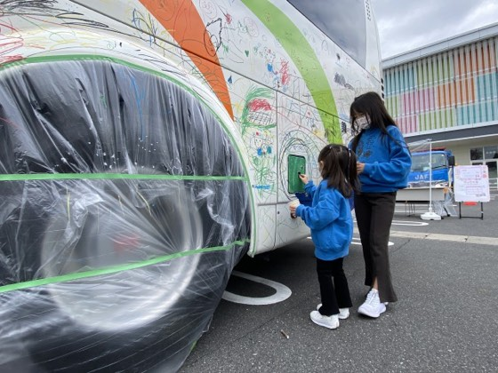
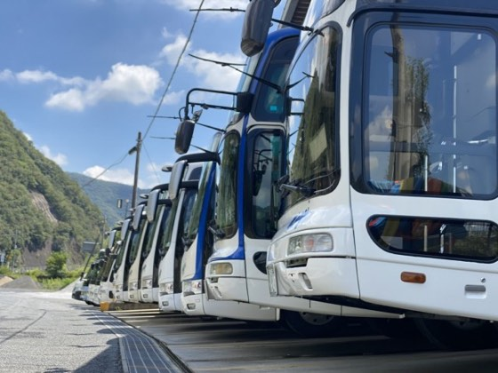
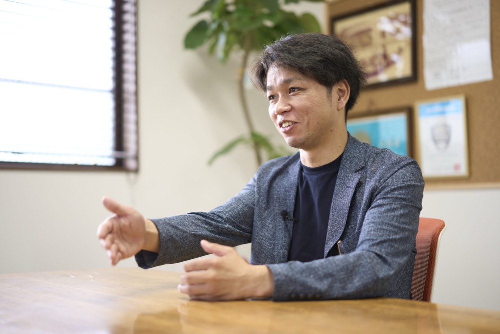

総社から万博へ!地域の足を支える美袋交通
池上 友彬tomoaki ikegami
株式会社美袋交通 代表取締役
自動車整備の専門学校で整備士免許を取得後、他業界で3年間の法人営業を経験。24歳で美袋交通に入社。乗務員不足を支えるため一般従業員としてスタートし、タクシーやバスの現場を経験。2025年9月に35歳で3代目代表取締役に就任。「移動全般を通じて地域に貢献する」という強い意志のもと、同業他社との協調や次世代育成、新たな輸送の可能性に挑み続けている。
企業サイトを見るCHAPTER 01
タクシー1台からの出発

Q美袋交通の事業内容とこれまでの歩みについてお聞かせください。
A私たちは岡山県総社市を中心に「地域の足」として親しまれている交通企業です。当社の歴史は1972年に遡り、私の祖父がたった1台のタクシーから事業をスタートさせたのが原点です。その後、私の父である2代目が法律の改正や様々な業界のしがらみを乗り越えながら事業を拡大していきました。具体的には福祉車両であるリフトバスの導入を皮切りにバス事業へと舵を切り、地道に車両を増やしていったのです。
現在では9台のタクシーと52人乗りの大型バスから12人乗りの小型バスまで計11台のバスを保有し、旅行業全般も手掛けています。学校関係の送迎や部活動のサポートはもちろん、JTB様をはじめとする大手旅行会社様の募集ツアー、さらには昨年の大阪・関西万博における半年間の現地輸送まで、非常に幅広い移動ニーズに応えています。また災害時や電車が不通になった際の代替輸送など地域における「移動全般」を広く支える存在として日々ハンドルを握っています。
Q総社市という地元に特化した強みや、他社との差別化はどこにあるとお考えですか?
A最大の強みは長年培ってきた地元との深い繋がりと、そこから生まれる柔軟な機動力です。私たちは単に乗り物を運行しているのではなく、地域の皆さんの生活や信頼をお預かりしています。地元での密接なお付き合いがそのままお仕事のご縁に直結しており、その期待に応えるための「動きやすさ」を大切にしています。
大手旅行業者様をはじめ、多様な業者様との強固なご縁があるからこそ、あらゆるジャンルの輸送にワンストップで対応できる貸切バスの体制が整っています。この地域密着の姿勢と、どんな移動ニーズにも確実に応える技術力こそが他社には真似できない私たちの確固たる優位性であると自負しています。
CHAPTER 02
白球を追った日々から営業職へ
Q池上社長はどのような経緯で家業を継ぐことになられたのでしょうか。
A実は、最初から家業を継ぐことを前提に生きてきたわけではありませんでした。私は小学校4年生からずっと野球に全ての情熱を注ぎ込んできました。甲子園を本気で目指す高校球児であり、その後も本格的に白球を追う日々を過ごしていました。社会人になっても野球を続ける道もありましたが、将来を見つめ直し、自動車整備の専門学校へ進学。国家資格である整備士免許を取得しました。
ただ、卒業後もすぐには入社せず、社会人としての視野を広げるため、あえて他業界の会社に就職し、法人営業の仕事を約3年間経験しました。様々な企業を訪問し提案を行う営業職の経験は、信頼関係をゼロから構築する力を養う上で、大きな財産となりました。
Qその後、24歳で美袋交通に入社されてからは、どのような経験を積まれたのですか?
A24歳で戻ってきた時は一般の従業員と全く同じ立場でスタートしました。当時は乗務員不足が深刻化し始めていた時期で当社もギリギリの人数で回している状態でした。まさに「猫の手も借りたい」というタイミングです。入社後はすぐに二種免許を取得し、タクシーの運転手から始めて現場の経験を積みました。その後、大型バスの運転も任されるようになり、最前線で汗を流してきました。
現在、会社には25名前後の社員が在籍しており、24歳から70代まで幅広い年齢層が活躍しています。私自身、社長に就任した今でも現場をサポートするために自らハンドルを握って運行に出ることがあります。現場のドライバーと同じ目線に立ち、互いに助け合いながら、細かい部分にまで目を光らせるこのスタイルこそが、経営者としての私の原点であり、全社の一体感を生み出す源泉になっていると感じています。




CHAPTER 03
コロナ禍を乗り越えた同業他社との熱い絆

Q35歳という若さで代表取締役に就任されたとのことですが、事業承継の際のエピソードをお聞かせください。
A代表就任が決まってから実際に交代するまでの期間は、わずか「1週間」という驚くほどのスピードでした。父から「来月、代表が変わるぞ」と言され「え、来月ってあと1週間しかないけれど?」というトントン拍子。もちろん心の準備はしていたため驚きはありませんでしたが、お取引先様へのご挨拶などは急ピッチで行う必要があり、怒涛の日々でした。ありがたいことに周囲からは「いよいよだね」と温かい激励の言葉を数多くいただき、歴史ある会社と社員の生活を守り抜くという強い覚悟が固まりました。
Qコロナ禍や昨年の万博輸送など、近年の激動の時代をどのように乗り越えてこられたのでしょうか。
A近年の交通業界は激動の連続でした。特にコロナ禍は大打撃を受けましたが、岡山県の素晴らしいところは同業他社同士の絆が非常に強いということです。普通ならライバルとして火花を散らす関係になりがちですが、県内の業者同士は驚くほど仲が良く、仕事が溢れそうな時は互いに助け合い、融通し合う風土が根付いています。他県に比べても、連携の頻度がめちゃくちゃ多い地域だと感じます。
あの苦境の中でも、私たちは「みんなで手を取り合って、一緒に生き残ろう」という強い協調精神で支え合って乗り越えてきました。その絆があったからこそ、昨年の大阪・関西万博における半年間の現地輸送という大仕事も、岡山グループとして一丸となってやり遂げることができたのです。もはや1社単独の力で突き進む時代ではありません。今後は、これまで以上に同業他社との協力を緊密にし、地域の強みを結集して大きな仕事に挑んでいきたいと考えています。既存の枠組みだけに捉われず、輸送の知識やノウハウを活かし、時代に即した新たな「移動のカタチ」や乗り物の可能性にも積極的にチャレンジし、地域に貢献していくつもりです。